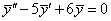

П 29.3 № 5
Найдите решение НЛДУ .
Решение:
1) Находим общее решение соответствующее однородного уравнения.
ОЛДУ .
Ищем решение в виде  .
.
.Подстановка в уравнение дает характеристическое уравнение для
 : , корни
характеристического уравнения ,фундаментальная
система решений однородного уравнения ,
: , корни
характеристического уравнения ,фундаментальная
система решений однородного уравнения ,  ; общее решение однородного уравнения
является их линейной комбинацией .
; общее решение однородного уравнения
является их линейной комбинацией .
: , корни
характеристического уравнения ,фундаментальная
система решений однородного уравнения , ; общее решение однородного уравнения
является их линейной комбинацией . 2) Находим частное решение  исходного
неоднородного уравнения методом неопределенных коэффициентов.
исходного
неоднородного уравнения методом неопределенных коэффициентов.
исходного
неоднородного уравнения методом неопределенных коэффициентов.Правая часть уравнения имеет вид ,
характеристическое число для правой части и
не совпадает с корнями характеристического уравнения и
, частное решение ищем в виде , где  неизвестный
коэффициент, .
неизвестный
коэффициент, .
неизвестный
коэффициент, . Подстановка и в уравнение дает: , откуда ,частное
решение НЛДУ: .
и в уравнение дает: , откуда ,частное
решение НЛДУ: . 3) Общее решение неоднородного уравнения равно сумме общего
решения однородного уравнения и любого частного решения исходного неоднородного
уравнения:
.
Ответ: .